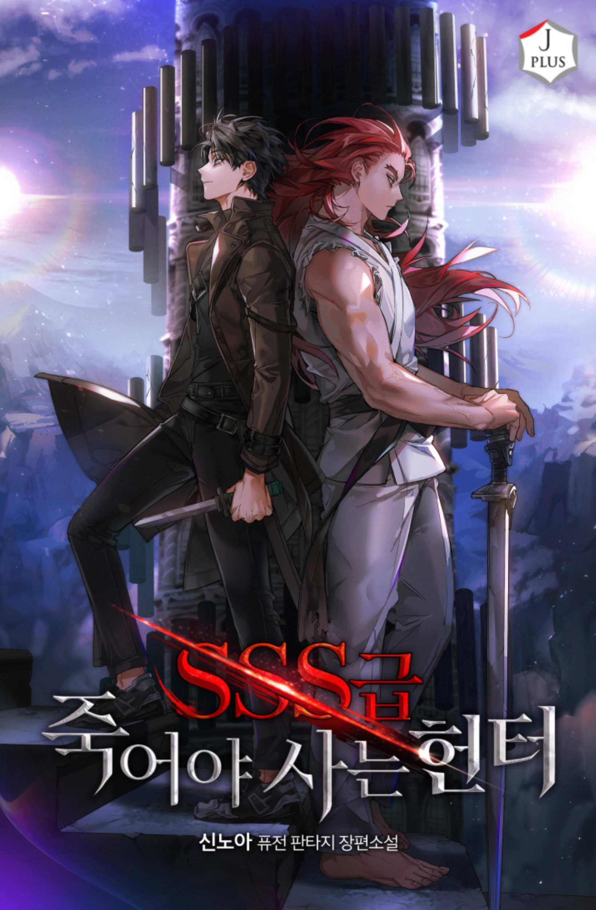
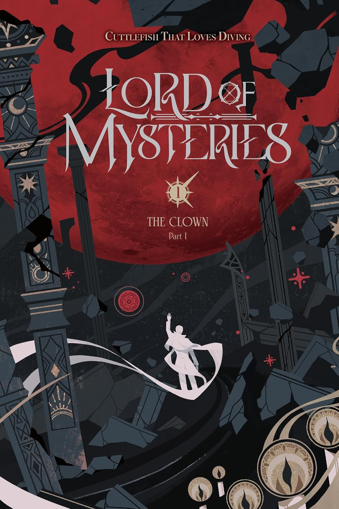

Trilha Sonora
Uma música para acompanhar suas leituras.
Obras recentes

SSS Class Suicidal Hunter

Bem vindo ao PaperLog!
Um espaço pessoal para organizar leituras e registrar opiniões sobre livros e suas adaptações.
Uma música para acompanhar suas leituras.

